채널: 레디포그로스 (Ready For Growth) | 길이: 16:38 | 날짜: 2026-01-26
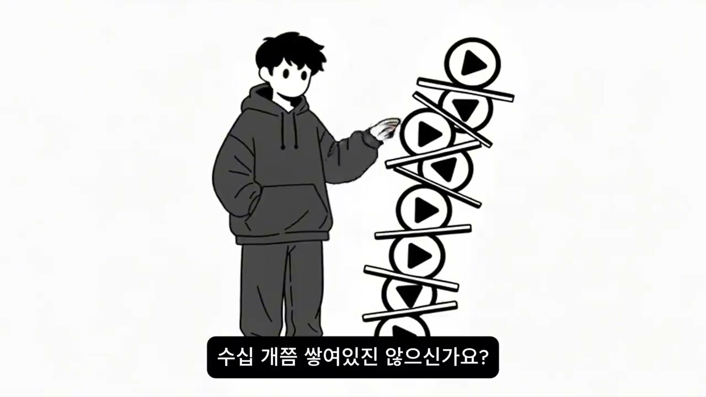
화자는 시청자를 정면으로 찌르는 질문으로 시작합니다. “지금 영상 보면서 다른 탭을 열어두지 않았는지”, “나중에 보려고 저장만 해둔 영상이 수십 개 쌓이지 않았는지”를 묻고, INFP가 이상적·공감적·깊은 사고를 지닌 유형임을 먼저 인정합니다.
시각적으로는 플레이 버튼 아이콘들이 막대 위에 위태롭게 쌓여 있어 “미처리 콘텐츠 누적”을 상징합니다. 자막의 “수십 개쯤 쌓여있진 않으신가요?”와 정확히 대응되는 도식입니다.
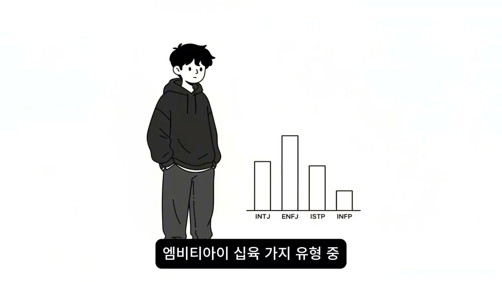
핵심 전환은 “왜 자질은 좋은데 실행·성과는 낮은가”입니다. 화자는 2025년 미국 심리학회 발표 데이터라고 소개하며, MBTI 16유형 중 INFP 평균 소득이 하위 3위권이고 창의성 지수는 상위권인데 경제적 성취는 바닥권이라고 주장합니다.
중요 메시지는 “능력의 문제가 아니라 구조의 문제”입니다. 화면에는 INTJ / ENFJ / ISTP / INFP 막대그래프가 나오고 INFP 막대가 가장 낮아, 자막의 비교 주장을 시각적으로 고정합니다.
화자는 “오늘 끝까지 보면 왜 뇌가 실행을 방해하는지 이해하고, 단 하나의 전략으로 구조를 역전할 수 있다”고 약속합니다. 또 “15분 후 ‘나중에’라는 단어를 안 쓰게 될 것”이라는 강한 기대 문구를 던집니다.
여기서 INFP 뇌를 컴퓨터에 비유하며 “램은 큰데…”로 다음 설명(CPU 과부하)로 넘어갑니다. 화면의 ‘빛나는 열쇠’는 “해결 열쇠 제시”를 상징합니다.
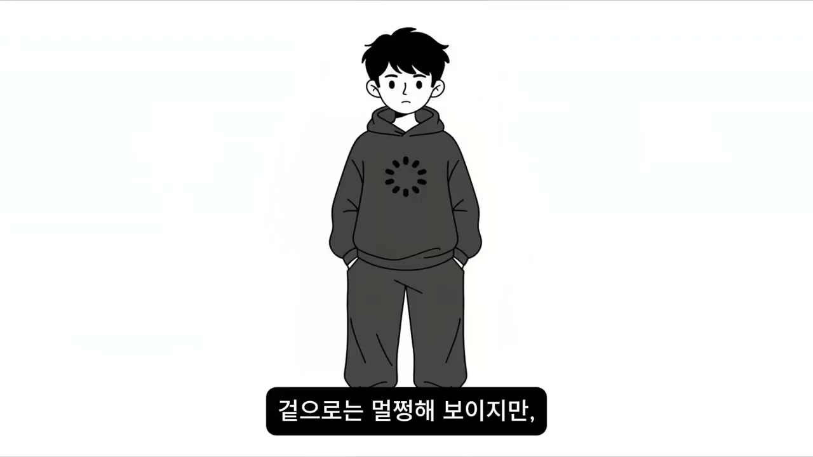
컴퓨터 비유가 완성됩니다. “수십 개 브라우저 탭(유튜브, 문서, 음악, 이메일)이 동시에 열려 겉으론 멀쩡하지만 실제론 처리 불능”이라는 설명으로 INFP의 내적 혼잡을 묘사합니다.
핵심은 INFP 주기능이 내향감정(Fi)이라는 점입니다. 화면 인물 가슴에 로딩 아이콘이 들어가 있어, ‘겉보기 정상/내부 과부하’를 한 컷으로 표현합니다.
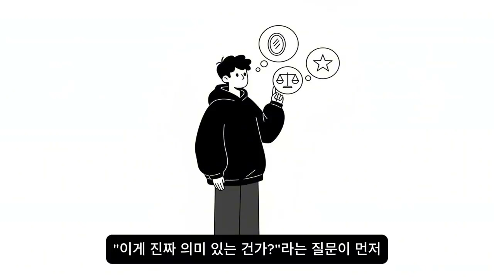
Fi의 기능을 “모든 정보를 가치관·감정 필터로 통과시키는 것”으로 정의합니다. 그래서 INFP는 ‘해야 하니까’보다 ‘내 가치에 맞는가, 어떤 사람이 되는가, 진짜 의미가 있는가’를 먼저 묻는다고 설명합니다.
이어 부기능 외향직관(Ne)가 붙으면 가능성이 폭발적으로 확장된다고 말합니다. 화면에는 저울/별 등의 아이콘이 떠서 ‘가치 판단·의미 평가’ 과정을 시각화합니다.
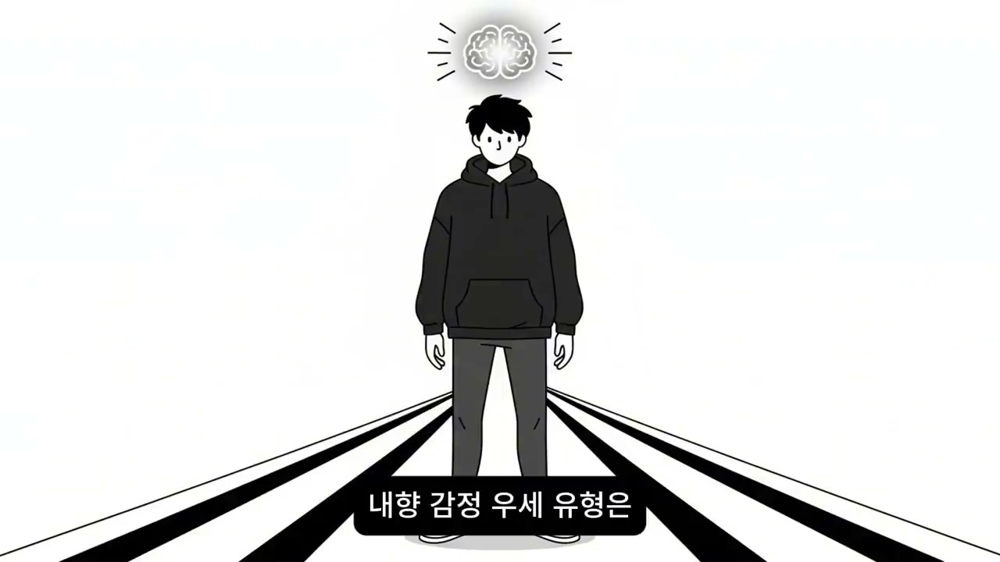
“1개 아이디어→10개 가능성→다시 100개”로 분기되는 사고 구조 때문에 결정이 어려워진다고 주장합니다. 2024년 토론토대 신경과 연구팀 실험이라며, 내향감정 우세 유형은 의사결정 시 전두엽 활성화가 평균보다 27% 오래 지속됐다고 제시합니다.
화자는 이를 “결정할 때 뇌가 약 30% 가까이 더 많은 에너지를 쓴다”로 풀어 설명합니다. 화면도 뇌 상단 발광과 다중 경로 바닥선을 통해 “과도한 인지 연산”을 강조합니다.
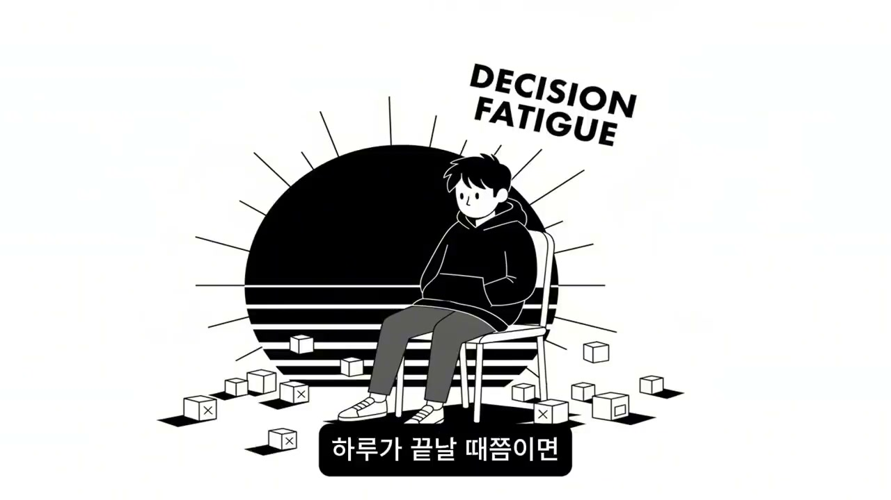
일반 뇌 에너지 사실(체중 2% / 에너지 20% 소비)을 덧붙여, 결정 자체가 고비용 행위임을 강조합니다. INFP는 사소한 결정에도 에너지가 과투입돼, 하루 끝에 정작 중요한 일에 쓸 에너지가 남지 않는다고 설명합니다.
이 현상을 심리학 용어로 결정피로(Decision Fatigue)라고 명시합니다. 화면에도 DECISION FATIGUE 텍스트가 직접 등장해 용어를 각인합니다.
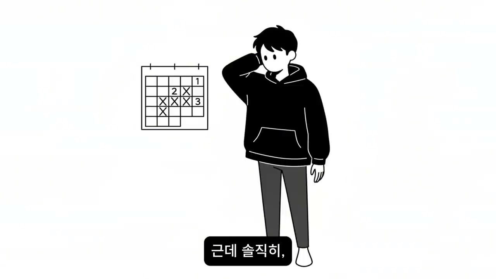
화자는 시청자의 기존 시도를 열거합니다: 투두리스트 앱, 뽀모도로 타이머, 아침 기상용 알람 5개. 그리고 솔직히 지속 기간이 길어야 2주, 대부분은 3일도 못 간다고 말합니다.
원인은 방법 자체가 NTJ/ESTJ 같은 “실행형 뇌”에 맞춰 설계됐기 때문이라는 주장입니다. 화면의 체크 캘린더와 멈칫하는 인물은 “규칙은 있으나 지속은 안 되는” 패턴을 보여줍니다.
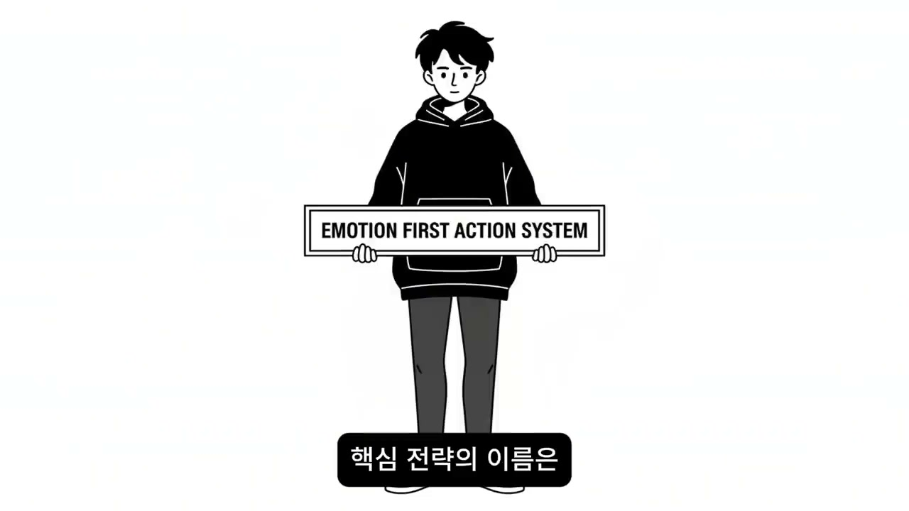
“INFP 뇌에는 안 맞는다”를 자동차 비유로 강화합니다. “브레이크 시스템이 다른 차에 남의 브레이크 패드를 끼운 것”이라는 표현으로 미스매치를 설명합니다.
여기서 핵심 전략명이 공개됩니다: 감정선행실행법(Emotion First Action System). 화면 중앙 간판에 EMOTION FIRST ACTION SYSTEM이 크게 표시됩니다.
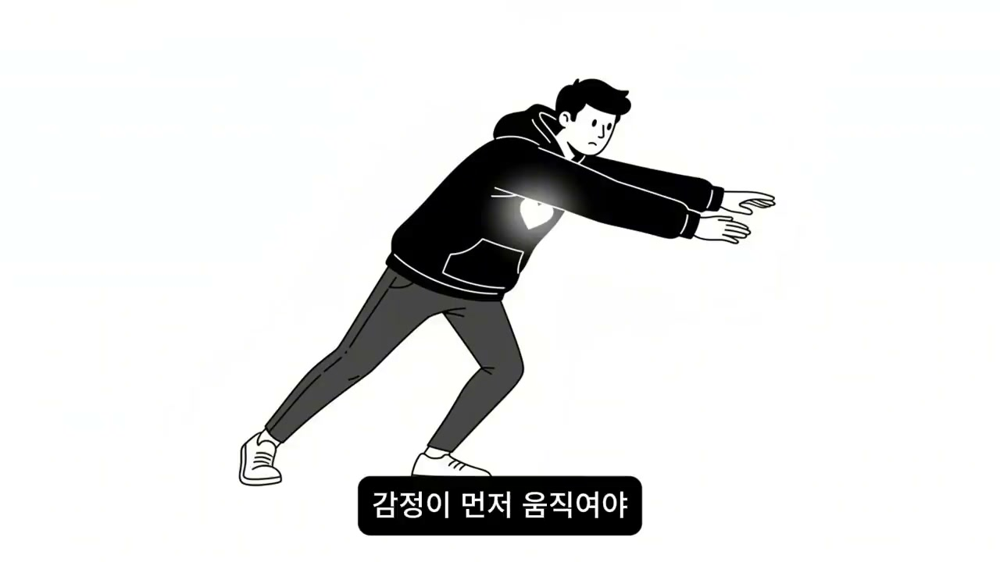
기존 생산성 순서가 “목표-계획-실행-결과”로 매우 논리적이지만, 사고형(T 계열) 뇌에 더 잘 맞는다고 구분합니다. INFP는 감정-의미-실행-결과 순서로 작동해야 행동이 붙는다고 주장합니다.
그리고 바로 1단계 감정 앵커링으로 들어가며, “아침에 눈뜨자마자 해야 할 일을 떠올리지 말라”고 지시합니다. 화면의 가슴(심장) 발광과 전진 자세는 “감정 에너지 선점”을 상징합니다.
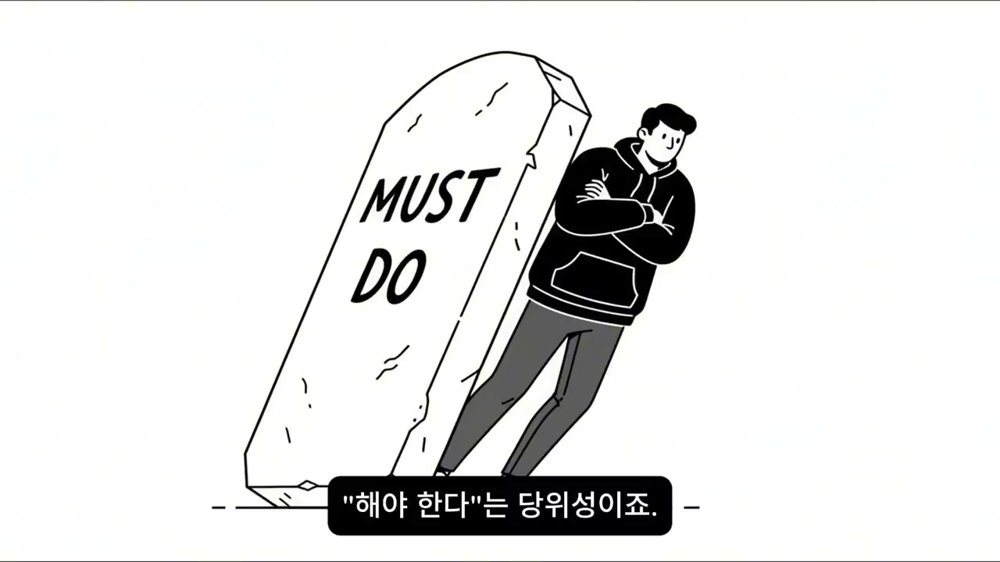
대체 질문은 “오늘 하루가 끝났을 때 어떤 나로 잠들고 싶은가?”입니다. 화자는 이 질문이 Fi를 정면 자극하기 때문에 강력하다고 설명합니다.
투두리스트는 외부 압력(당위)이고 INFP 뇌는 외부 압력에 저항하도록 설계됐다는 논리입니다. 반면 ‘어떤 존재가 되고 싶은가’는 정체성과 연결된 내부 동기이며, INFP에게 가장 강한 동기라고 정리합니다. 화면 MUST DO 바위가 인물을 짓누르는 그림은 외부당위의 무게를 상징합니다.
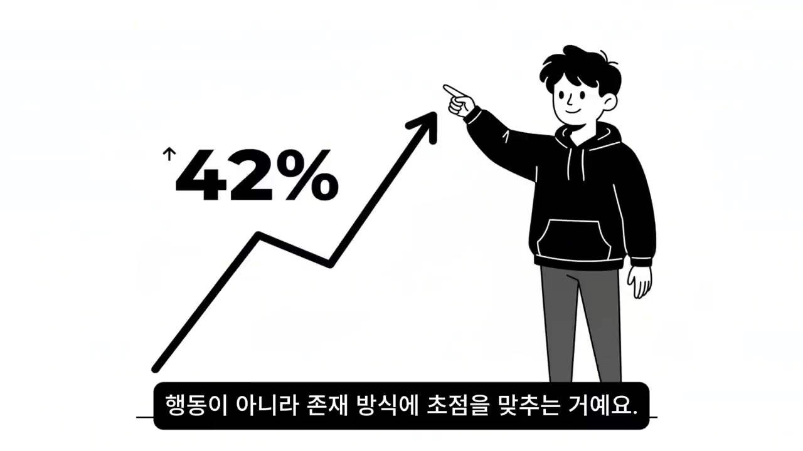
운동 예시가 제시됩니다. “오늘 운동해야지”는 저항을 만들지만, “오늘 끝날 때 내 몸을 돌본 사람으로 잠들고 싶다”는 정체성 언어는 뇌 반응을 바꾼다는 주장입니다.
요점은 행동 목표가 아니라 존재 방식 목표입니다. 2025년 하버드 비즈니스 리뷰 연구라고 소개하며, 정체성 기반 목표 설정 그룹이 행동 기반 그룹보다 60일 후 지속률 42% 높았다고 말합니다. 화면에서도 상승 그래프와 42%가 크게 표시됩니다.
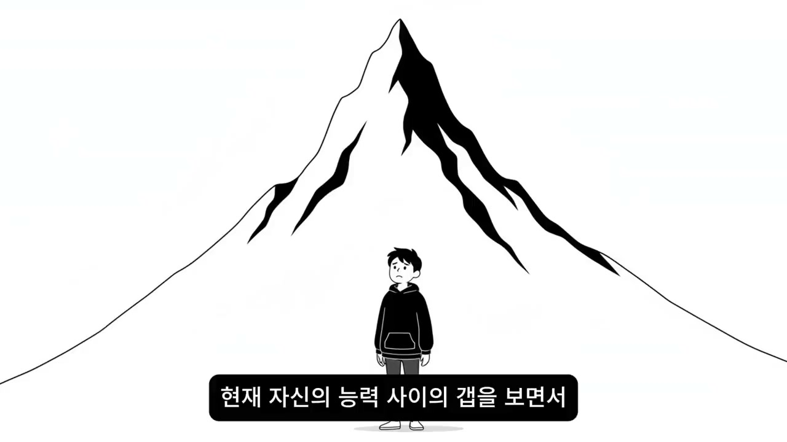
화자는 “거의 2배 가까운 차이”라고 앞선 수치를 재강조한 뒤, 2단계로 이동합니다. INFP의 최대 적은 완벽주의이며, 시작 전부터 최종 결과물을 상상하고 현재 역량과의 갭에 압도돼 시작 자체를 못 한다고 진단합니다.
해결책은 “뇌를 속이는 것”: ‘진짜 일’이 아니라 ‘작은 실험’이라는 신호를 주라는 것입니다. 화면의 거대한 산 앞에 작은 인물을 배치해 ‘이상-현실 격차의 압도감’을 시각화합니다.
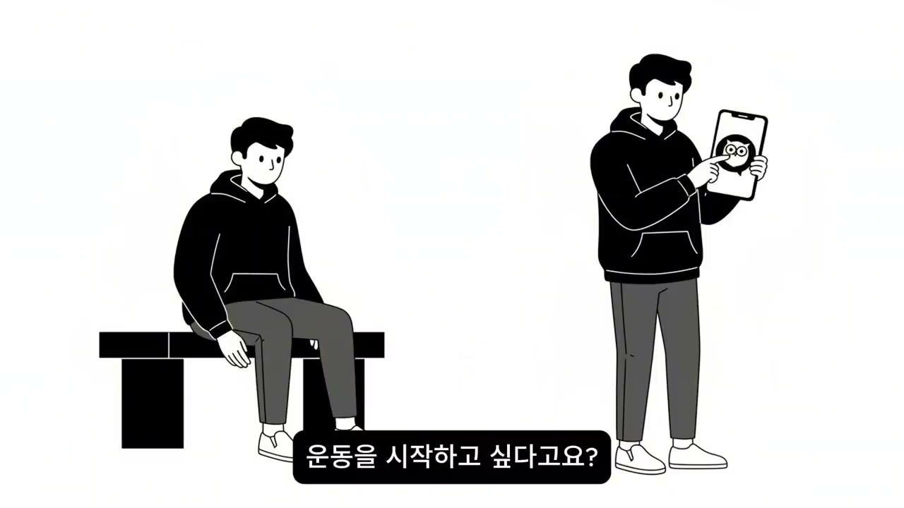
구체 지침은 매우 엄격합니다. 해야 할 일을 2분 안에 끝낼 수 있는 최소 단위로 쪼개라는 것(5분/10분 아님).
예시: 글쓰기라면 첫 문장 한 줄, 운동은 운동복만 입기, 영어공부는 앱 열기만. 작동 원리로 자이가르닉 효과(시작한 일은 끝내고 싶어하는 본능)를 제시합니다. 화면은 ‘앉아 있음 vs 작은 행동 실행’ 대비로 시작 장벽을 낮추는 메시지를 보여줍니다.
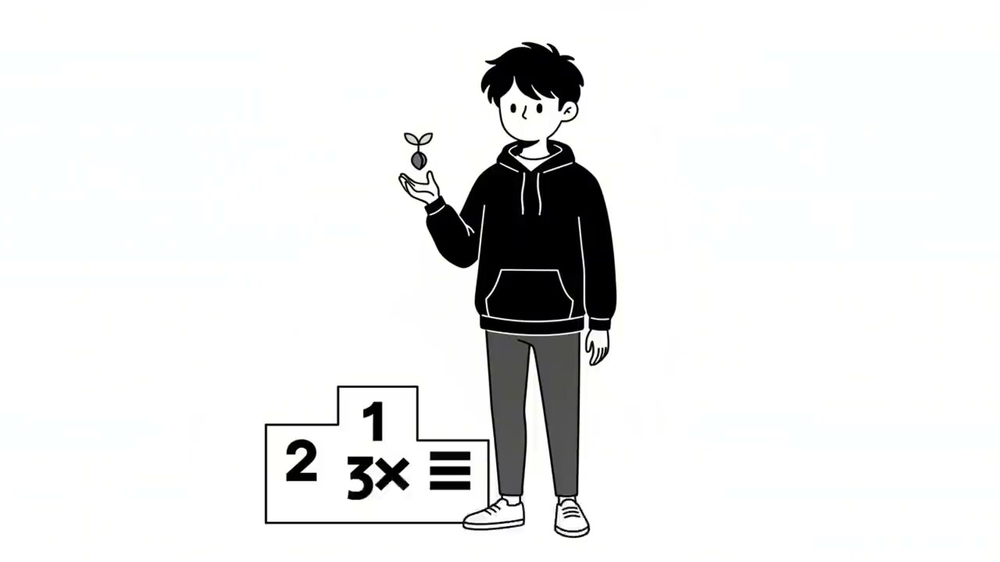
“운동복을 입는 순간 뇌는 이미 시작한 일로 인식한다”는 식으로 2분 행동의 트리거 효과를 설명합니다. 스탠포드대 행동설계연구소 자료라고 소개하며, 2분 이하 마이크로 태스크로 시작한 집단이 30분 이상 태스크로 시작한 집단보다 완주율 3배 높았다고 제시합니다.
이어서 3단계 예고: 감정일기 피드백 루프. “INFP에겐 숫자 성과지표가 잘 안 통한다”는 전제가 추가됩니다. 화면의 작은 새싹과 3x 표식은 ‘작은 시작→큰 완주율’ 은유입니다.
성과 문장을 바꾸라고 제안합니다. “이번 달 50만 원 벌었다”보다 “이번 달 나는 어떤 사람이었나”가 INFP에게 더 중요하다는 주장입니다.
실행법은 매일 밤 3분: “오늘 나는 어떤 순간에 가장 나다웠는가?”를 떠올리고 한 줄 기록. 이유는 INFP 뇌가 의미를 연료로 쓰기 때문이며, 의미 발견 시 에너지가 생성된다고 설명합니다. 화면은 실제로 일기 쓰는 장면으로 단순하지만 명확한 루틴을 보여줍니다.
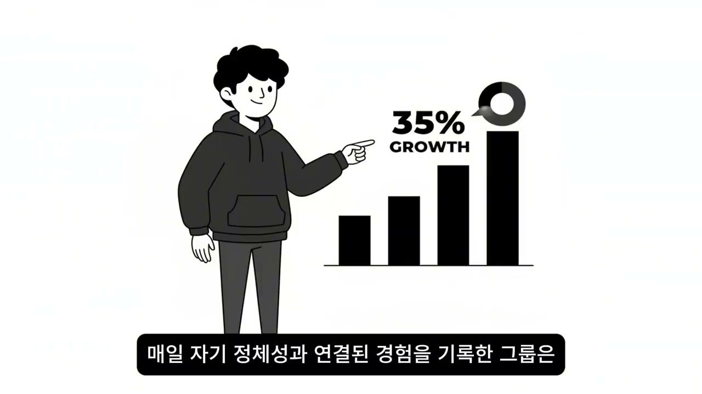
이 기록이 다음날 아침 에너지를 만든다고 연결합니다. 화자는 이것을 단순 일기 쓰기가 아니라 정체성 강화 훈련으로 명명합니다.
2023년 긍정심리학 저널 연구라고 하며, 자기 정체성과 연결된 경험을 매일 기록한 그룹은 8주 후 자기효능감 35% 상승. 자기효능감은 “나는 할 수 있다”는 신념이며, 이것이 올라가면 실행력이 자동으로 따라온다고 정리합니다. 화면에 35% GROWTH 막대그래프가 표시됩니다.
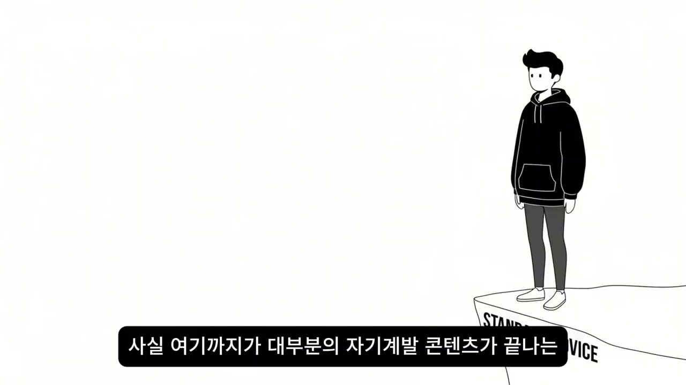
시청자 반론을 직접 다룹니다. “좋은 방법인 건 알겠는데, 이것도 며칠 하다 흐지부지되면?”이라는 합리적 걱정입니다.
화자는 대부분 자기계발 콘텐츠가 여기서 끝난다고 지적하고, 자신은 여기서 끝내지 않겠다며 “포기 방지 심리적 안전장치”를 예고합니다. 화면 가장자리에 STANDARD ADVICE 텍스트가 보여 ‘기존 조언의 한계’를 시각적으로 분리합니다.
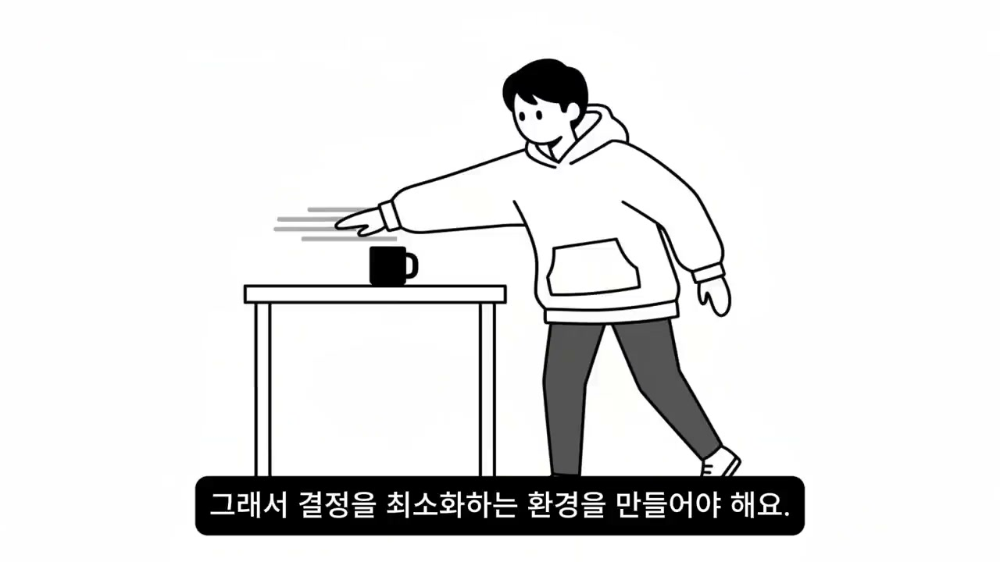
“진짜 핵심”이라며 전술 레벨로 진입합니다. 첫 전술은 결정피로 제로 시스템: 전날 밤에 다음날 첫 행동을 미리 고정하라는 것.
아침에 “뭐하지?”를 생각하는 순간 에너지 20%가 증발한다는 문장을 반복해 결정비용의 심각성을 강조합니다. 화면은 손이 컵으로 즉시 뻗는 장면으로 ‘고민 없는 자동 실행’을 상징합니다.
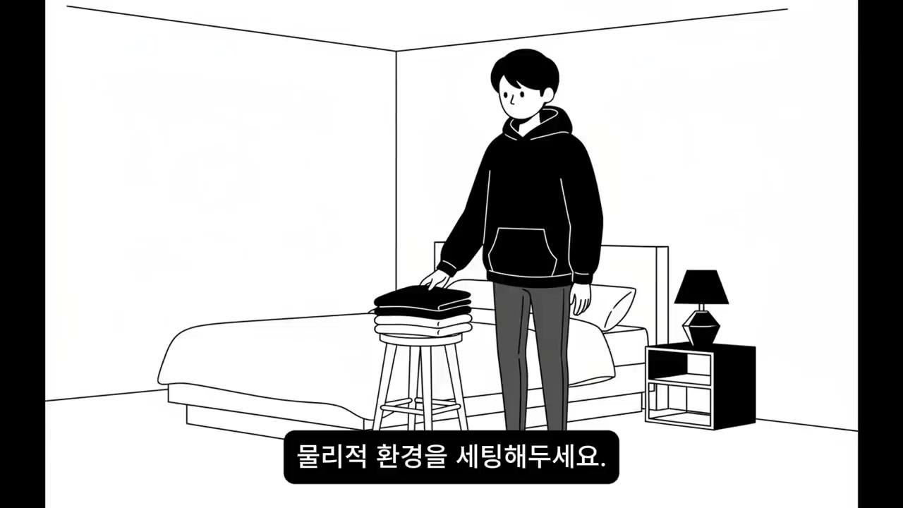
실행 예시는 “내일 아침: 물 한 잔 + 3분 스트레칭”처럼 구체 동사/시간까지 포함해 전날 확정하라는 것. 아침 뇌는 결정 없이 실행만 하면 된다고 설명합니다.
강화 방법은 물리적 환경 세팅입니다. 운동하려면 운동복을 침대 옆에, 글쓰려면 노트북과 문서를 미리 켜둔 채 잠들기. 화면에서도 침대 옆에 옷을 배치한 장면으로 환경 설계 원리를 직관화합니다.
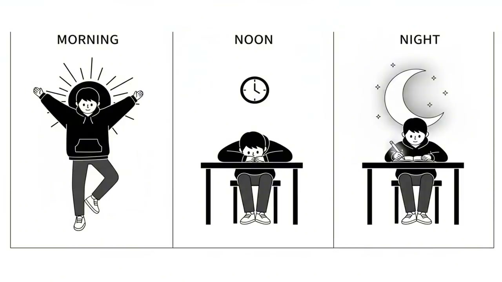
두 번째 전술은 감정변동 대응입니다. 화자는 INFP 감정은 하루 12번까지 바뀔 수 있고, 아침 의욕-점심 무기력-저녁 창작욕 폭발이 “정상”이라고 말합니다.
문제는 변동성 자체가 아니라 예측 없이 당하는 것이라고 진단합니다. 해결책으로 1주일 동안 시간대별 에너지 레벨을 1~10으로 기록해 개인 패턴을 만들라고 지시합니다. 화면에는 10AM 피크와 Work 배치가 있는 시간대 그래프가 보입니다.
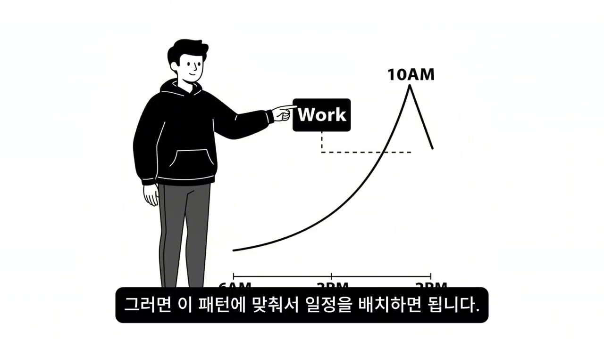
일주일만 기록하면 패턴이 보인다고 주장합니다(예: 오전 10~12시 고에너지, 오후 3시 저하). 이후 핵심은 감정 통제가 아니라 감정 파도 위 일정 서핑입니다.
고에너지 시간에는 창의 작업, 저에너지 시간에는 단순 반복 작업 배치. “감정을 통제하려 하지 마라, 불가능하다”는 금지 문구가 분명하게 제시됩니다. 화면은 MORNING / NOON / NIGHT 3분할로 리듬 기반 스케줄링을 보여줍니다.
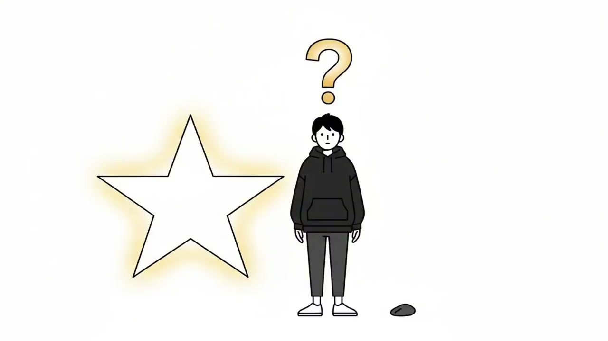
세 번째 전술은 이상주의자용 현실 필터입니다. INFP의 문제를 “이상이 너무 높아서 시작 전에 좌절”로 규정하고, 시작 전 마법 질문을 제안합니다:
“이걸 70%만 해도 괜찮을까?”
화자는 이 질문이 완벽주의 회로를 잠깐 꺼준다고 설명합니다. “100%가 아니어도 된다”는 인지적 틈이 시작을 가능하게 만든다는 논리입니다. 화면은 견고한 벽돌 구조와 무너지는 구조를 대비시켜 기준 설정의 효과를 암시합니다.
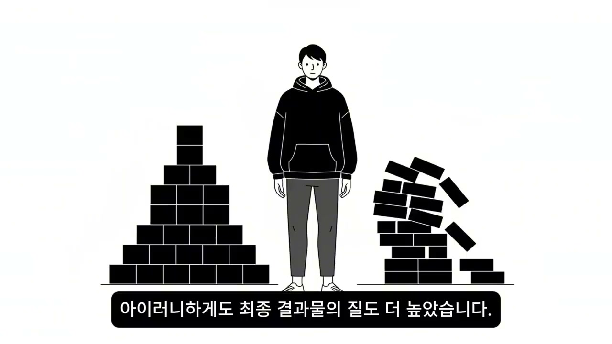
2024년 프로덕티비티 저널 연구라고 소개하며, 70% 목표 그룹이 100% 목표 그룹보다 완료율 2배 높았고 최종 결과물 질도 더 높았다고 주장합니다.
이유는 “일단 시작하면 수정·개선 기회가 생긴다”입니다. 이어 네 번째 전술 소셜 어카운터빌리티 해킹으로 넘어가며, INFP는 자기 자신과의 약속은 약하지만 대인 약속은 상대적으로 잘 지킨다고 전제합니다. 화면의 큰 별과 물음표는 ‘이상(별)과 현실 질문’의 전환을 상징합니다.
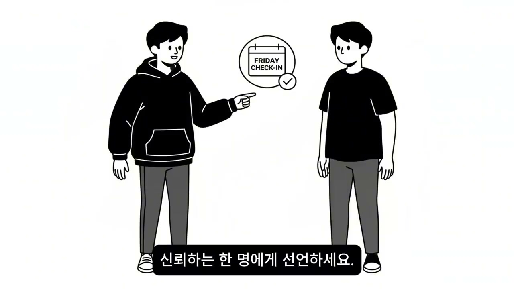
왜 대인 약속이 통하는지 내향감정(Fi)의 관계 신뢰 특성으로 설명합니다. 실천법은 “혼자 목표 세우지 말고, 신뢰하는 단 한 명에게 선언: 이번 주에 이거 할 거야, 금요일에 확인해줘.”
중요한 제한도 함께 제시합니다. 많은 사람에게 말하면 INFP는 주목 부담으로 역효과가 날 수 있으니, 반드시 한 명만 선택하라는 것입니다. 화면의 캘린더 아이콘 FRIDAY CHECK-IN이 이 규칙을 시각적으로 고정합니다.
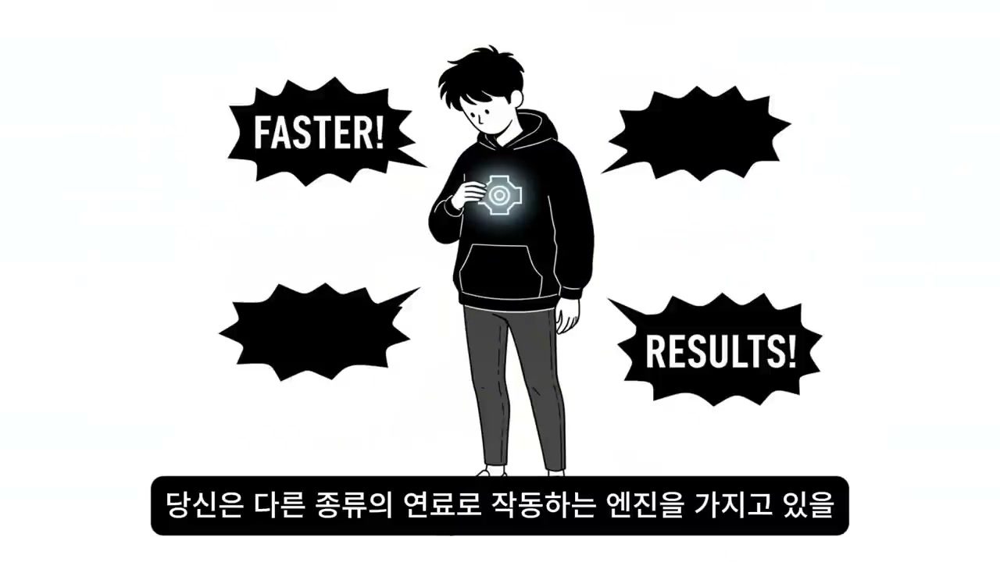
화자는 전략·전술 설명 뒤, “가장 중요한 이야기”로 결론 프레임을 제시합니다. 메시지는 단호합니다: INFP는 실행력이 없는 게 아니라 다른 연료로 작동하는 엔진을 가진 것뿐이다.
세상은 “빨리/효율적으로/결과”를 요구하지만 이는 휘발유 엔진 기준이며, INFP는 전기차라는 비유를 사용합니다. 화면에서는 LAZY 표지판이 X표로 지워져 ‘게으름 낙인 해제’를 시각화합니다.
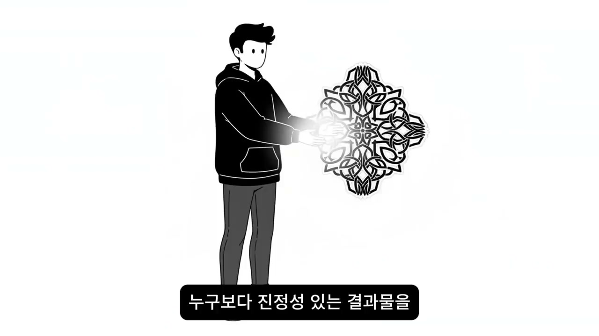
전기차 비유가 확장됩니다. 충전 방식·작동 원리·장점이 다르므로, 휘발유 넣으러 주유소 가면 안 된다는 것입니다.
INFP의 연료는 의미·가치·정체성이며, 이것이 충전되면 누구보다 깊고 진정성 있는 결과물을 낼 수 있다고 주장합니다. 오늘 제시한 감정선행실행법이 바로 “INFP 엔진 맞춤 충전법”이라는 선언입니다. 화면의 FASTER!, RESULTS! 외부 구호와 가슴의 내부 발광 대비가 이 메시지를 강화합니다.
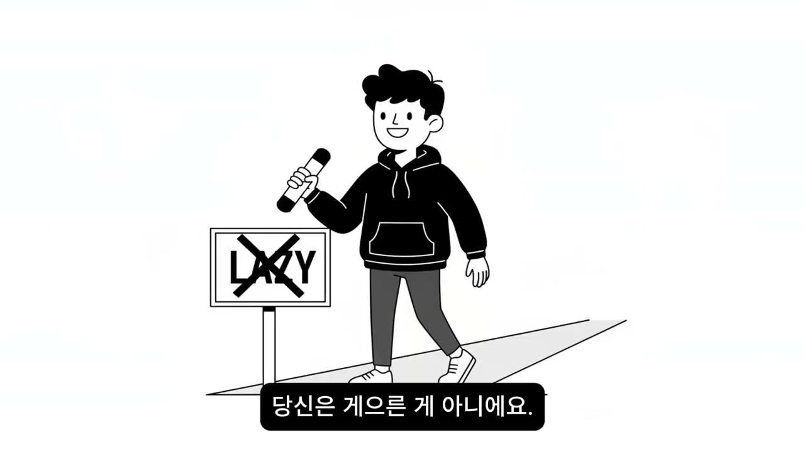
최종 실행 문장: “내일 아침 눈 뜨자마자, 오늘 하루 끝났을 때 어떤 나로 잠들고 싶은가?” 그리고 그 답에 맞는 가장 작은 행동 하나를 2분 안에 하라.
“그것만 하면 나머지는 뇌가 알아서 한다”는 표현으로 시작 마찰 최소화를 재강조합니다. 다시 한번 “당신은 게으른 게 아니라 방법을 몰랐던 것”이라 정체성 낙인을 벗겨주고, 지금은 시작만 하면 된다고 마무리합니다. 화면은 복잡하게 휘어진 길 위 달리기와 MARATHON 텍스트로 장기전 프레임을 시각화합니다.
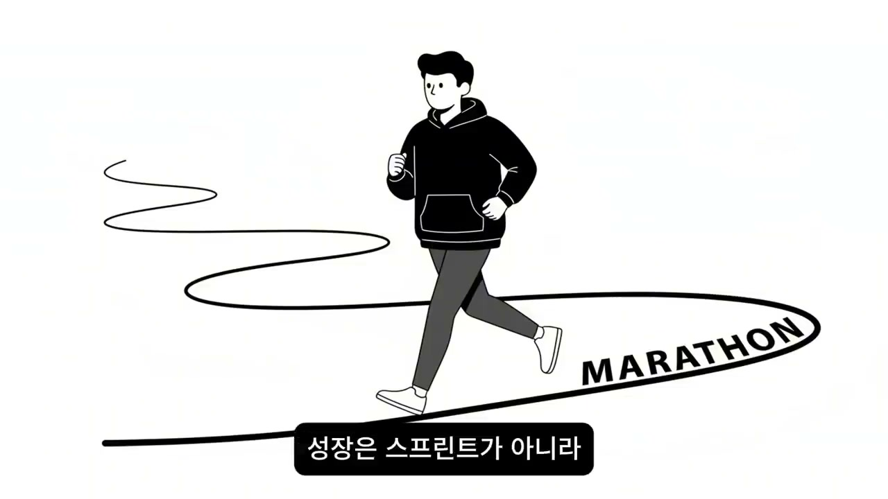
클로징은 구독·좋아요·알림 요청입니다. “당신의 성장 여정에 함께하겠다”, “성장은 스프린트가 아니라 마라톤”, “당신은 이미 출발선에 서 있다”는 문장으로 심리적 지지 톤을 유지합니다.
브랜드 사인오프는 “이상 지금까지 레디포그로스였습니다. 감사합니다.”로 종료됩니다.
“이건 능력의 문제가 아닙니다. 구조의 문제예요.”
“인프피의 뇌는 감정이 먼저 움직여야 행동이 따라와요.”
“감정, 의미, 실행, 결과. 이 순서예요.”
“오늘 하루가 끝났을 때 어떤 나로 잠들고 싶은가?”
“5분도 아니고 10분도 아니고 딱 2분.”
“이걸 70%만 해도 괜찮을까?”
“아침에 ‘뭐하지?’라고 생각하는 순간 에너지의 20%가 이미 증발해요.”
“감정을 통제하려고 하지 마세요. 그건 불가능해요. 대신 예측하고 서핑하는 거예요.”
“인프피는 실행력이 없는 게 아닙니다. 다른 종류의 연료로 작동하는 엔진을 가지고 있을 뿐이에요.”
“당신의 연료는 의미예요, 가치예요, 정체성이에요.”
“당신은 게으른 게 아니에요. 방법을 몰랐을 뿐이에요.”
이 영상의 결론은 명확합니다. INFP 실행 문제를 ‘의지 부족’으로 보지 말고, 동기 구조(정체성)와 실행 구조(초소형 시작), 환경 구조(사전 세팅), 관계 구조(1인 체크인)로 재설계해야 한다는 것입니다.
실용적으로는 다음 4가지가 핵심 행동축입니다:
1) 아침 전 질문을 밤에 미리 정체성 질문으로 전환,
2) 목표를 2분 단위로 분해해 시작 마찰 제거,
3) 일일 3분 정체성 기록으로 자기효능감 축적,
4) 한 명의 신뢰 관계를 통해 완료 압력 외주화.
영상은 수치·연구·도식을 적극 사용해 설득하지만, 핵심 설계 철학은 결국 한 문장으로 요약됩니다.
“INFP에게 맞는 연료를 먼저 충전하면, 실행은 그 다음에 자동으로 붙는다.”
댓글
GitHub 이슈 기반 댓글 시스템입니다.